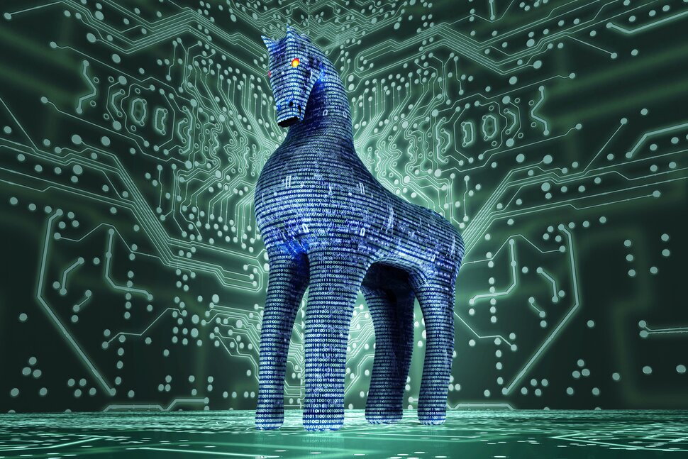
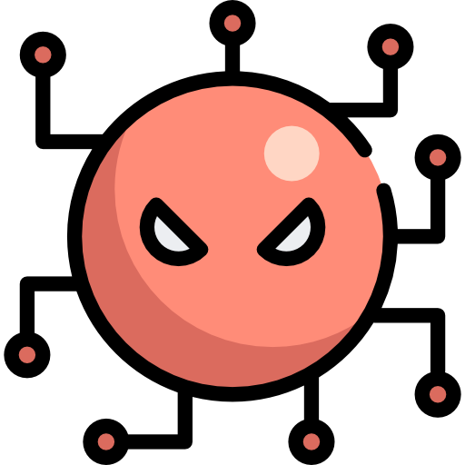
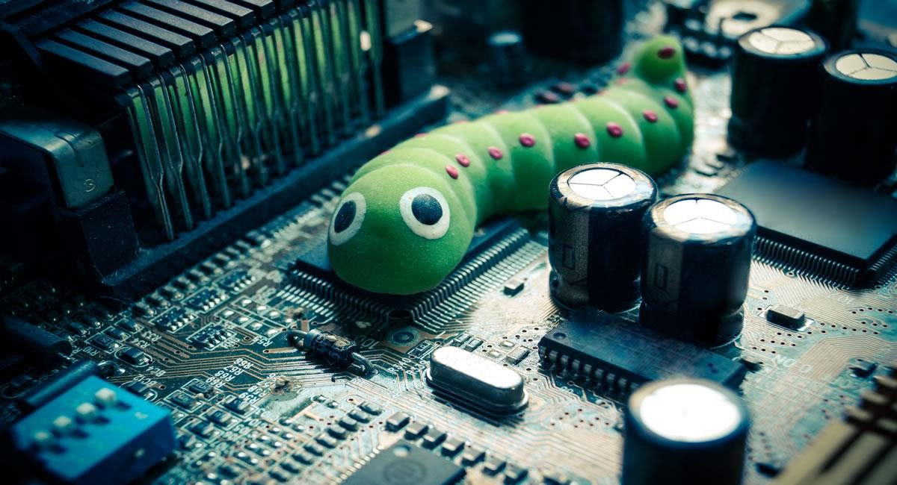
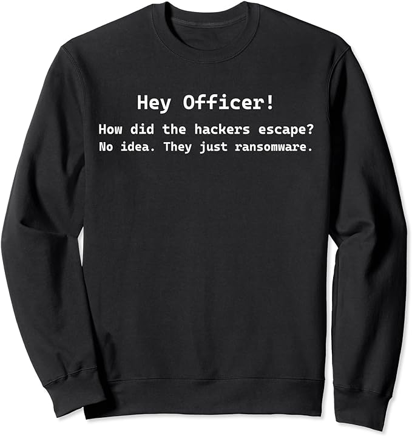
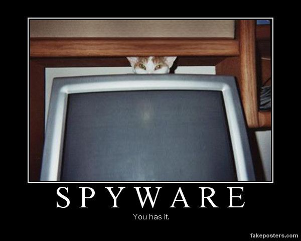

⏫
Liste non exhaustive

1- Trojan
Le rôle principal du trojan est d’infliger le plus de dommages avec le moins de temps possible.
Pour cela, il va se camoufler en une application identique à celles que nous connaissons (discord, calculatrice...). Il peut aussi se dupliquer dans les dossiers du système ou remplacer des fichiers personnels.

2- Virus
Ils infectent des fichiers ou des programmes sains en leur injectant du code malicieux.
Cela va souvent rendre les applications en question corrompues et inutilisables, mais les plus discrets peuvent les laisser fonctionner correctement.

3- Worm
Il peut se camoufler et infecter comme les trojan et les virus. Mais il va se caractériser par sa fonction de propagation.
En effet, il peut être inoffensif, mais il va se dupliquer très rapidement par les mails, connexions internet ou les messageries instantanées.

4- Ransomware
Il encrypte les données personnelles de l’utilisateur afin d’en demander une rançon (souvent en bitcoin) à payer sous un court délai.
Attention, car payer ne vous rendra probablement jamais la clé pour décrypter vos fichiers.

5- Spyware
Il a pour but de s’installer pour collecter et transférer des données personnelles et sensibles (mot de passe, activité internet, fichiers, identité), souvent sans que l’utilisateur s’en aperçoive.
Il peut se révéler par des baisses de vitesse de connexion, de batterie ou de performance.
5- Cryptojacking
Il utilise les ressources de l’appareil telles que le CPU et la RAM afin de “miner” de la crypto-monnaie.
Pour cela, le programme va résoudre des problèmes mathématiques complexes et valider des transactions sur la “blockchain” dans le but d’être récompensé en crypto-monnaie.